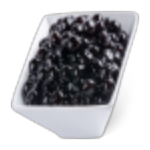
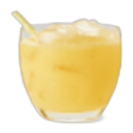
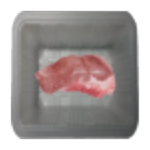
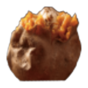
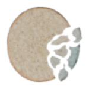
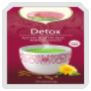
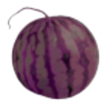
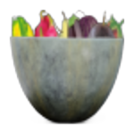

| Name | Image | Tier | Pool | Description | Flavor |
|---|
| Cheese Scone |  | Common | | Upon pickup gain 2 Max HP. At the start of combat gain 2TemporaryStrength and 1TemporaryDexterity. | Is it a cake, biscuit or sponge? |
| Coconut |  | Common | | Gain 4 Max HP on pickup. Gain 1 potion slot on pickup. | A delightful fruit from a place far warmer than the Spire. Its shell can carry a potion after consuming the fruit. |
| Darkling Jelly |  | Common | | Gain 4 Max HP on pickup. Each time you deal Fatal damage during combats with 2 or more enemies, heal 1 HP. | Sticky Jelly made from the goo of Darklings. You seem to understand how to extract vitality from groups of creatures after eating it. |
| Foxnut |  | Common | | Gain 4 Max HP on pickup. At the start of combat draw 1 card. | Sourced not from trees but the miracle springs, these nuts are sweet and provide miraculous bursts of swiftness. |
| Lemon Float |  | Common | | Gain 2 Max HP on pickup. At the start of your second turn, draw 2 cards. | A frosty citrussy float. once you get past the initial coldness it, provides a zingy swiftness. |
| Snake™ Bubbles | | Common | | Heal 12 HP and gain 2 Max HP on pickup. At the start of turn 3 draw 2 cards. | Now with an added pop! Snake™ managed to replicate the flavour of the Snakefruit and add them to this tea! It has sold much better than the now very expensive boxed variety. |
| Apple Pie |  | Uncommon | | Gain 5 Max HP on pickup. Whenever you play a Power, gain 1 Temporary HP. | Apples from a faraway land were baked into a divine pastry and provide a long lasting source of vitality. |
| Cured Jaw Worm |  | Uncommon | | Gain 3 Max HP on pickup. At the start of every odd turn, gain 1Strength. Can be cooked at Rest Sites. | The cured tongue of a slain Jaw Worm, its toughness still remains. |
| Joja Cola | | Uncommon | | Gain 2 Max HP and heal 2 HP on pickup. At the start of your third turn, gain [E]. | Hailing from a farming community, this drink seems questionable at best in most ways. |
| Lemon Snucks | | Uncommon | | Upon pickup gain 7 Max HP. The next relic in a chest you see will be lost, but you will gain 17 more Max HP. | A citygoers favourite thing to pair with Snake™ as the lemon flavour helps compliment the subtle nuttyness of the Snake™. |
| Pomegranate Daiquiri |  | Uncommon | | Lose 7 Max HP on pickup. At the end of your turn, for every 2Skills in your hand, draw 1 card next turn. | An unusual drink that can help refine technique retention. Its alcohol content, however makes it somewhat toxic to the Spire's denizens. |
| Shellard Spaghetti | | Uncommon | | Gain 2 Max HP on pickup. At the start of combat gain 1Metallicize per Power in your deck, but lose 1Metallicize per Power played. | With a whole Lavagullin claw! It seems to make your techniques provide a steely posture that fades in the heat of battle. |
| Awoken Cake |  | Rare | | LOSE up to 6 HP on pickup. The first time each turn you Exhaust a card, gain 1Strength.Mazalethwillbeangry. | Despite its appearance, this cake is actually very small because the Cultists say their leader can't eat too much sugar at once. The guilt of eating someone else's cake is painful. |
| Baked Sweet Potato |  | Rare | | Upon pickup gain 5 Max HP. Once per turn you may left click this relic's Button to discard a card in hand then draw a card randomly from your discard pile. | A somewhat sweet, cooked vegetable that helps you remember things later. |
| Chilli Dog |  | Rare | | Upon pickup gain 4 Max HP, if you play 10 cards in one turn apply 1Slow to ALL enemies. | Rumour has it that this relic's Recipe arrived from a mysterious swirling portal in the red-mask district, but most citygoers are too afraid of the red gang to check it out. |
| Collectors Mints | | Rare | Blue | Gain 4 Max HP on pickup. At the end of your turn, if you have at least 3 unique Orbs, gain 1Focus. | A unique brand of mints produced by the Collector, each mint has a different flavour. Perhaps your [ORB] should be, too? |
| Hexacakes |  | Rare | | Gain 6 Max HP on pickup. When you play a power, gain 1Mantra. The first time you play 6Powers each combat, gain 4Mantra. | Spicy and warm, these cakes bring bursts of divine and ethereal energy. Favoured by a certain ghost. |
| Hot Chocolate |  | Rare | | Gain 2 Max HP and heal 50% of your Max HP on pickup. Upgrade the first 3 unupgraded cards drawn each combat. | A sweet drink from the Brass Tundra, it is seemingly a peaceful beverage. |
| Nob Jerky |  | Rare | | Gain 4 Max HP on pickup. Whenever you play 15Skills during combat, gain 1Enrage. | Smoked meat from a Gremlin Nob. Eating it fills you with an indescribable anger. |
| Ominous Oatcakes |  | Rare | | Gain 14 Max HP on pickup. When you play a Fleeting card, obtain an Un-upgraded copy of the card and lose 1 Max HP that increases by 1 with each use. | These strange biscuits seem to be departing from our world, eat them quickly!.. or don't? |
| Passionfruit |  | Rare | | Gain 8 Max HP on pickup. At the end of your turn draw 2 cards next turn per Power in your hand. | A powerful fruit from the jungles, its sour tang can bring swiftness to unrealised techniques. |
| Pineapple Sorbet |  | Rare | | Gain 1 Max HP on pickup. At the end of your turn draw 1 more next turn card per card in your hand over 5. | The refreshing pineapple sorbet hails from a land extremely far from the spire. Consuming it can help retain one's skill over time. |
| Slaver Sliders |  | Rare | | Gain 4 Max HP on pickup. At the start of combat, apply 1Weak to ALL enemies. | Now with Snecko's special sauce. |
| Snake™ |  | Rare | Green | Heal to full on pickup. The first time you play a Power each combat gain 4Accuracy and 4Mallable. | It used to be popular in the city, but when Snake Plants were bewitched by the Collector, the stonks of this tea brand collapsed. |
| Cooked Jaw Worm |  | Special | | Gain 5 Max HP on cooking. At the start of your turn, gain 1Strength. | Now cooked with the few herbs found in the spire, this flavourful meal carries strong vitality and power. |
| Banana Energy | | Boss | Blue | Gain 00000111 Max HP on pickup. When you evoke 1 orb, gain [E] and increase the threshold by 1 this turn. | Now with real energy! Might actually be circuit lubricant. |
| Blighted Watermelon |  | Boss | | bundlecore:Rare Lose 25% Max HP on pickup. At the start of combat, gain bundle_of_food:Watermelon_Buffs . | While it is still edible the Watermelon preserves much of the ichor and toxin of its taint. |
| Brick of Exxod |  | Boss | | Lose 25% of your Max HP on pickup. At the start of your turn, draw 2 cards. If you play 60 cards in one turn, Obtain TruestPower. | As soon as you look at it you get an overwhelming feeling... INFINITE POWER?!?!? I MUST EAT IT. ALL OF IT?!?! |
| Cultist's Chair Cookie | | Boss | | Gain 7 Max HP on pickup. At the start of combat, gain 1Ritual,1Strength and 1Curiosity. | Strange cookies that ominously pulsate, they give you an uncanny urge to dab. |
| Cursed Walnut | | Boss | | Gain 3 Max HP on pickup. At the start of your turn, gain [E] [E] but lose 2Dexterity. | A walnut that only grows ontop of mass graves, its screaming shell will petrify the wielder unless they learn to handle its immense power. |
| Delicious Donu | | Boss | | Gain 11 Max HP on pickup. At the start of your turn gain [E], Donu will arrive in every elite room and get stronger the higher you climb. Donuwillbeyourdestiny. | A forsaken treat that appears to be an effigy of a powerful creature found within the spire, such creature draws hatred towards it so consume at your own peril. |
| Dragonfruit |  | Boss | | Gain 8 Max HP on pickup. At the start of your turn, lose [E] but draw 3 additional cards. Gain 2Vigor when playing a card. After playing 7 cards gain 1 more Vigor per card each turn. | A fruit bearing overwhelming power, it hastens and invigorates the wielder so much it consumes much of their natural stamina. |
| Eggplant |  | Boss | | Gain 11 Max HP on pickup. Whenever you play a power gain 1Dexterity and 1Metallicize. | Remarkably well preserved from the spireblight, the Eggplant is big and hard with a salty and bitter flavour. |
| Frosted Eclair |  | Boss | | Upon pickup gain 8 Max HP. At the start of turn 3 gain 5Strength. | A strange oblong pastry with a sweet chocolate frosting... filled with sweet, sticky, creamy white goodness! I want another one! - Ranwid |
| Fruit Salad |  | Boss | | bundlecore:Rare When you climb a floor gain 1 Max HP. Gain bundle_of_food:Fruity_Buffs related to each fruit in the bowl. | A confused and chaotic cacophony of fruits put together into a bowl with cursed, oddly green cream. |
| Pickle Pizza |  | Boss | | Gain 5 Max HP on pickup. Negate the negative effects of Weak and Frail.Weak increases attack damage by 12.5%,Frail increases Block gain by 12.5%,Vulnerable now provides 40% block versus incoming damage. | Why? Well, because pickles seem to cure most ailments found in the Spire. Most of the Spire's denizens hate its taste, though. |
| Snecko Stew |  | Boss | | Gain ? Max HP on pickup. When you play a card, draw and discard 3 cards randomly. If you drew cards this way, randomize the cost of all cards in your hand and decrease the effect by 1 card this turn. | Featuring two Snecko feet, this dubious looking stew confers bizarre and unexpected energy and swiftness. Lick with caution. |